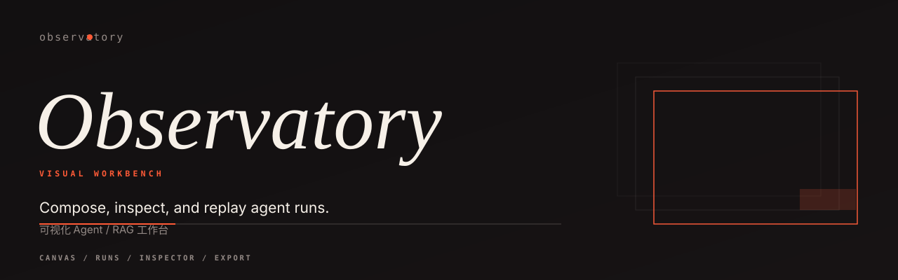

A graph that checks itself.
Nodes carry kind and config; edges carry direction. Validate unknown references, cycles, orphan nodes and unreachable components before a run starts.

可视化 Agent / RAG 工作台
A local workbench for the shape of a run: a validated flow graph, a trace you can read, and a replay you can diff. Standard library only.
Nodes carry kind and config; edges carry direction. Validate unknown references, cycles, orphan nodes and unreachable components before a run starts.
Steps nest through their parent reference. Flatten the forest, surface latency and token spend, and keep a compact text summary beside the canvas.
Replay re-emits a recorded run under a fresh id. Diff two runs structurally by node, status, latency and output, without a model call in the loop.
Install the package, validate the example flow, and open the workbench. The API binds to loopback; nothing leaves the machine.
$ pip install -e . $ python -m observatory validate examples/flow.json Research Agent / research-agent nodes 7 / edges 8 order intake → retrieve → route → tools → synthesize → guardrail → reply valid $ python -m observatory serve --port 8787 Observatory ready on loopback:8787 flows 1 · runs 1
Synthetic single-process workloads, best of three samples. Reproduce with python3 benchmarks/bench.py; hardware notes and the full table live in the README.